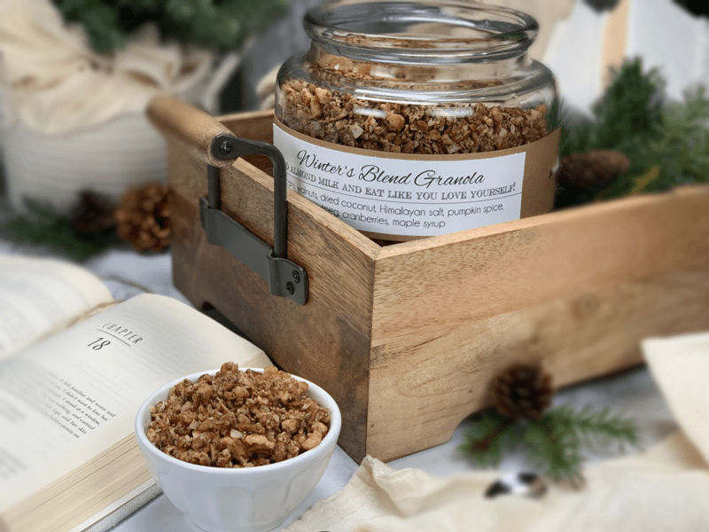
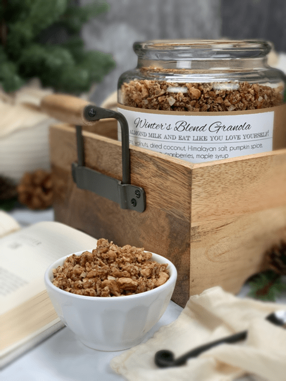

Winter’s Blend Granola
Hands down, this is my all-time favorite granola. I have made this statement before, but I now realize that I have been mistaken. And I assure you that this bold statement will stay strong and true… until my next granola creation. But seriously folks, this is a dangerous granola for me to keep on hand but only because I can’t resist nibbling on it all day.

So why is it that this granola has shut down my superpower of willpower?!! I had to sit with that question and ponder over it. Is it because I so enjoy the balance of sweet and salty? Is it the light, airy crunch of the sprouted pecans and walnuts? Is it the buttery flavor of the two nuts combined? Is it the warming spices that bring a coziness to my belly? Or is it because I don’t feel guilty after consuming all those nutrient-dense ingredients? I think every thought rings true! When you combine all those amazing factors, you are bound to end up with a favorite granola!
Fuel Up On Goodness
While many conventional granolas are sweetened with refined sugar or high-fructose corn syrup, this granola gets its sweetness from maple syrup. Made from sprouted nuts, unsweetened coconut, and a few spices, it’s safe for Paleo and gluten-free eaters, alike! No artificial flavors. No added colors. Just the taste you love and the nutrition you want. I wouldn’t fib to you! I hope you thoroughly enjoy this recipe. Please comment below. blessings, amie sue

Ingredients:
- 2 cups (245 g) pecans, soaked
- 2 cups (100 g) unsweetened, dried coconut flakes
- 1 cup (106 g) walnuts, soaked
- 1/2-1 tsp (3-6 g) Himalayan salt
- 1 Tbsp10 g) Pumpkin Spice
- 1/2 tsp (2 g) ground nutmeg
- 1/4 cup (76 g) maple syrup
Preparation:
- In a large bowl toss together the pecans, coconut, walnuts, salt, pumpkin spice, and nutmeg.
- Drizzle the maple syrup over the dry ingredients and toss everything together using your hands for the security of knowing all ingredients are well coated. Plus, there is something grounding about working with your hands.
Dehydrate:
- Line the dehydrator sheets with non-stick sheets.
- Loosely spread the mixture on the sheets.
- Do not have it any thicker than 1″ or the dry time will increase.
- Dehydrate at 145 degrees (F) for 1 hour, then reduce to 115 degrees (F) for 6 hours, until completely dry.
- Dry time will vary based on the climate, humidity, how thick the batter is spread out, etc. So use the dry time as a guideline.
- Be sure all the moisture is removed to increase shelf-life.
Storage:
- Store in airtight mason jars for 2-3 weeks or so.
- Store in the freezer for up to 3 months.
Usage:
- Granola snack
- Cereal with milk
- Topping for yogurt
- Sprinkle on ice cream
- Blitz it down to small pieces in the food processor and enjoy as a muesli cereal
Culinary Explanations:
- Why do I start the dehydrator at 145 degrees (F)? Click (here) to learn the reason behind this.
- When working with fresh ingredients, it is important to taste test as you build a recipe. Learn why (here).
- Don’t own a dehydrator? Learn how to use your oven (here). I do however truly believe that it is a worthwhile investment. Click (here) to learn what I use.
© AmieSue.com